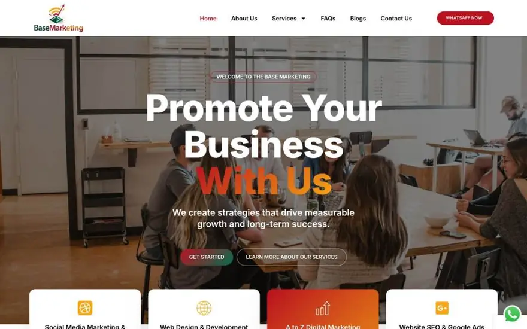

.jpeg)
Ascend Studio / Websites
A better first impression. A clearer next step.
Custom websites and companion apps that help visitors find information and take action, with a CMS your team can manage.

Scope / Website & App Development
The right work.
Clearly defined.
Custom church websites, not templates
Companion apps: giving, sermons, events, groups
Real estate websites and lead-capture pages
Maintenance and optimisation
How we work
A clear path from the start.
Free Strategy Call
30 minutes on where you are and where you need to go.
Discovery & Assessment
A structured review of your brand, platforms and goals.
Strategy & Proposal
A prioritised roadmap scoped to your capacity and budget.
Build & Execute
Delivery with regular check-ins on progress and timelines.
Launch & Optimise
Deployment, testing and an active post-launch period.
Selected team work
See it in context.
Project FAQs
A little more clarity.
What does a project cost?
Every engagement is custom-scoped; there are no packages or templates. The free strategy call is how we work out what's right for your situation and budget.
How long does a website take?
It depends on scope and how quickly content is provided. You receive a specific timeline in the proposal.
Do you work with small churches?
Yes: church plants, growing congregations and multi-site ministries. Scope scales to your situation.
What makes Ascend Studio different?
Our founding team brings 7+ years of agency experience in brand, web and marketing for churches, ministries and faith-aligned businesses.
Do you work outside our city?
Yes. Ascend Studio works nationwide. Most engagements run remotely; on-site work such as events and media setup is available.